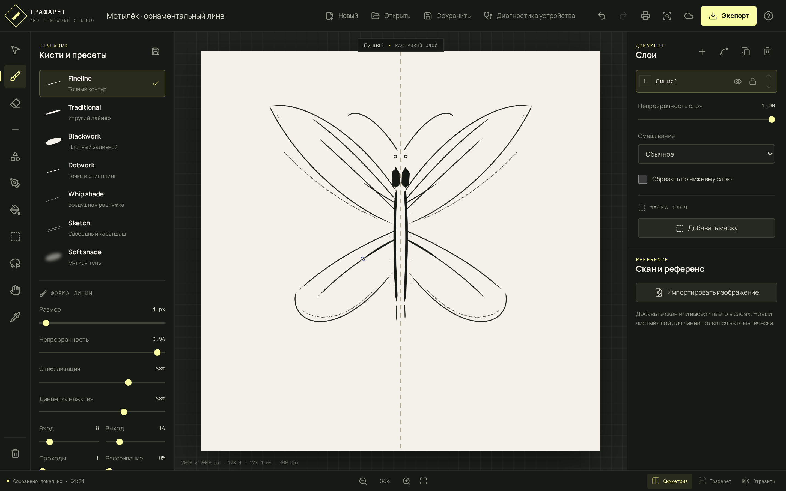
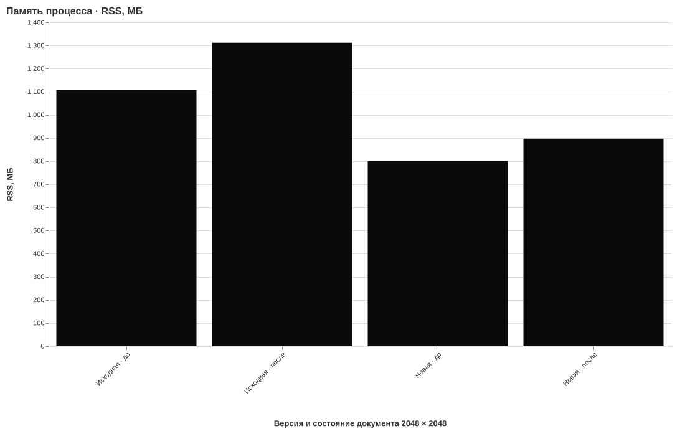
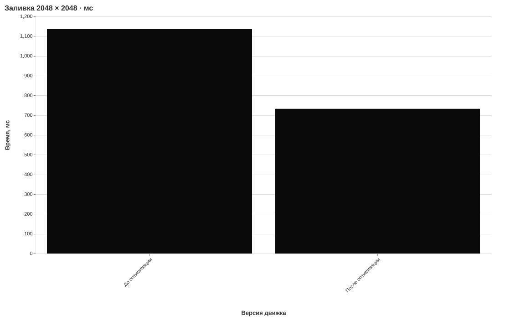

Бесплатно Автономная студия тату-линворка Windows · Android
Трафарет
От первой линии до готового трафарета.
«Трафарет» — собственный цельный сценарий работы с тату-эскизом: рисунок с управлением нажимом, локальный анализ композиции, экспорт в печать и синхронизация проектов. Это не клон Clip Studio Paint: мы не ставим целью равенство или превосходство над CSP — инструмент следует своей логике, от линии до готового трафарета.

01 · Возможности
Инструменты линии
Всё перечисленное ниже — реальные функции текущей версии, а не плановые.
-
01
Движок линии
Давление пера (pressure) и настраиваемая стабилизация штриха. pressure / stabilization
-
02
Стили штриха
Fineline, traditional, blackwork, dotwork, whip, sketch, soft shade — семь режимов с собственным поведением линии.
-
03
Слои
Растровые, векторные и image-слои; маски и clipToBelow для чистой сборки эскиза.
-
04
Выделение
Прямоугольное выделение, лассо и заливка по области (flood fill).
-
05
Симметрия
Вертикальная и радиальная симметрия для симметричных композиций.
-
06
Импорт скана
Загрузка отрисованного от руки эскиза с переводом в градации серого и настройкой контраста.
-
07
Экспорт в печать
PNG с физическим размером pHYs и DPI, векторный SVG, печать — трафарет получается в реальном масштабе.
-
08
Формат проекта
Открытый .tattoo.json: слои, настройки и история проекта в читаемом виде.
-
09
Локальное хранение
Проекты в IndexedDB, установка как PWA: студия работает без сети и без аккаунта.
02 · Анализ и диагностика
Помощь, а не вердикт
Локальный анализ эскиза
«Трафарет» анализирует эскиз прямо на устройстве: лишние детали, баланс композиции, общую сложность. По результатам — рекомендации, а не вердикт: решает автор, что оставить, а что убрать.
Анализ выполняется локально, эскиз не покидает устройство.
Диагностика API устройства
Встроенная диагностика проверяет доступность графических API на конкретном устройстве, чтобы сразу показать, какой путь рендеринга будет использован.
Это не сертификация драйверов и не проверка железа — только доступность API.
03 · Синхронизация
Google Drive на твоих условиях
Синхронизация проектов с личным Google Drive — опциональна, приложение полностью работает без неё. Когда включена, «Трафарет» использует только папку «Трафарет» в Drive и scope drive.file — доступ к остальным файлам не запрашивается.
Каждый проект синхронизируется с привязкой к идентификатору и версии, а не к имени файла.
Контроль целостности через контрольные суммы и условные запросы: запись выполняется только если версия на Drive не изменилась.
Конфликт версий фиксируется как конфликт — и никогда не разрешается автоматически.
При потере сети синхронизация ждёт и повторяется, ничего не теряя и не дублируя.
Автосинхронизация после изменений и полностью ручной режим — на выбор.
При конфликте «Трафарет» показывает обе версии. Какую оставить — решает только пользователь.
Честно о синхронизации
- Для синхронизации требуется собственный Google Client ID — каждый пользователь или команда подключает свой.
- Синхронизация с реальным Google Drive под реальными credentials не проверена: это честное ограничение текущей версии.
- В браузере токен хранится только в памяти и не записывается в localStorage или на диск. В desktop-версии refresh token защищён через safeStorage.
04 · Архитектура
Как устроен «Трафарет»
Интерактивная схема: от интерфейса и движка линворка до экспорта и менеджера синхронизации.
Подписи на схеме — на русском; служебный интерфейс интерактивного viewer — на английском. Открыть схему в отдельной вкладке ↗
05 · Проверено
Только подтверждённое
Никаких оценок «до» и «после» без замеров. Ниже — только то, что реально прогнано.


Три повторных измерения, показан типичный результат. RSS включает shared pages и не является unique memory.
06 · Скачать
Бесплатно, без аккаунта
Ссылки
Подписи и честные ограничения
Коммерческой подписи кода Windows (EV/OV сертификат) у установщика нет — Windows SmartScreen может предупредить при первом запуске. APK подписан прежним сертификатом команды.
NOT_TESTED: запуск на физических устройствах Windows и Android; планшеты Wacom и протоколы WinTab / Windows Ink; физический тачскрин, GPU и принтер; синхронизация с реальным Google Drive под реальными credentials.